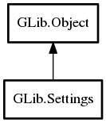

Settings
Object Hierarchy:
Description:
The Settings class provides a convenient API for storing and retrieving application settings.
Reads and writes can be considered to be non-blocking. Reading settings with Settings is typically extremely fast: on approximately the same order of magnitude (but slower than) a GenericSet lookup. Writing settings is also extremely fast in terms of time to return to your application, but can be extremely expensive for other threads and other processes. Many settings backends (including dconf) have lazy initialisation which means in the common case of the user using their computer without modifying any settings a lot of work can be avoided. For dconf, the D-Bus service doesn't even need to be started in this case. For this reason, you should only ever modify Settings keys in response to explicit user action. Particular care should be paid to ensure that modifications are not made during startup -- for example, when setting the initial value of preferences widgets. The built-in bind functionality is careful not to write settings in response to notify signals as a result of modifications that it makes to widgets.
When creating a GSettings instance, you have to specify a schema that describes the keys in your settings and their types and default values, as well as some other information.
Normally, a schema has as fixed path that determines where the settings are stored in the conceptual global tree of settings. However, schemas can also be 'relocatable', i.e. not equipped with a fixed path. This is useful e.g. when the schema describes an 'account', and you want to be able to store a arbitrary number of accounts.
Paths must start with and end with a forward slash character ('/') and must not contain two sequential slash characters. Paths should be chosen based on a domain name associated with the program or library to which the settings belong. Examples of paths are "/org/gtk/settings/file-chooser/" and "/ca/desrt/dconf-editor/". Paths should not start with "/apps/", "/desktop/" or "/system/" as they often did in GConf.
Unlike other configuration systems (like GConf), GSettings does not restrict keys to basic types like strings and numbers. GSettings stores values as Variant, and allows any VariantType for keys. Key names are restricted to lowercase characters, numbers and '-'. Furthermore, the names must begin with a lowercase character, must not end with a '-', and must not contain consecutive dashes.
Similar to GConf, the default values in GSettings schemas can be localized, but the localized values are stored in gettext catalogs and looked up with the domain that is specified in the gettext-domain attribute of the <schemalist> or <schema> elements and the category that is specified in the l10n attribute of the <key> element.
GSettings uses schemas in a compact binary form that is created by the glib-compile-schemas utility. The input is a schema description in an XML format.
A DTD for the gschema XML format can be found here: gschema.dtd
The glib-compile-schemas tool expects schema files to have the extension `.gschema.xml`.
At runtime, schemas are identified by their id (as specified in the id attribute of the <schema> element). The convention for schema ids is to use a dotted name, similar in style to a D-Bus bus name, e.g. "org.gnome.SessionManager". In particular, if the settings are for a specific service that owns a D-Bus bus name, the D-Bus bus name and schema id should match. For schemas which deal with settings not associated with one named application, the id should not use StudlyCaps, e.g. "org.gnome.font-rendering".
In addition to Variant types, keys can have types that have enumerated types. These can be described by a <choice>, <enum> or <flags> element, as seen in the example. The underlying type of such a key is string, but you can use get_enum, set_enum, get_flags, set_flags access the numeric values corresponding to the string value of enum and flags keys.
An example for default value:
<schemalist>
<schema id="org.gtk.Test" path="/org/gtk/Test/" gettext-domain="test">
<key name="greeting" type="s">
<default l10n="messages">"Hello, earthlings"</default>
<summary>A greeting</summary>
<description>
Greeting of the invading martians
</description>
</key>
<key name="box" type="(ii)">
<default>(20,30)</default>
</key>
</schema>
</schemalist>
An example for ranges, choices and enumerated types:
<schemalist>
<enum id="org.gtk.Test.myenum">
<value nick="first" value="1"/>
<value nick="second" value="2"/>
</enum>
<flags id="org.gtk.Test.myflags">
<value nick="flag1" value="1"/>
<value nick="flag2" value="2"/>
<value nick="flag3" value="4"/>
</flags>
<schema id="org.gtk.Test">
<key name="key-with-range" type="i">
<range min="1" max="100"/>
<default>10</default>
</key>
<key name="key-with-choices" type="s">
<choices>
<choice value='Elisabeth'/>
<choice value='Annabeth'/>
<choice value='Joe'/>
</choices>
<aliases>
<alias value='Anna' target='Annabeth'/>
<alias value='Beth' target='Elisabeth'/>
</aliases>
<default>'Joe'</default>
</key>
<key name='enumerated-key' enum='org.gtk.Test.myenum'>
<default>'first'</default>
</key>
<key name='flags-key' flags='org.gtk.Test.myflags'>
<default>["flag1",flag2"]</default>
</key>
</schema>
</schemalist>
Vendor overrides
Default values are defined in the schemas that get installed by an application. Sometimes, it is necessary for a vendor or distributor to adjust these defaults. Since patching the XML source for the schema is inconvenient and error-prone, glib-compile-schemas reads so-called vendor override' files. These are keyfiles in the same directory as the XML schema sources which can override default values. The schema id serves as the group name in the key file, and the values are expected in serialized GVariant form, as in the following example:
[org.gtk.Example]
key1='string'
key2=1.5
glib-compile-schemas expects schema files to have the extension `.gschema.override`.
Binding
A very convenient feature of GSettings lets you bind Object properties directly to settings, using bind. Once a GObject property has been bound to a setting, changes on either side are automatically propagated to the other side. GSettings handles details like mapping between GObject and GVariant types, and preventing infinite cycles.
This makes it very easy to hook up a preferences dialog to the underlying settings. To make this even more convenient, GSettings looks for a boolean property with the name "sensitivity" and automatically binds it to the writability of the bound setting. If this 'magic' gets in the way, it can be suppressed with the NO_SENSITIVITY flag.
Namespace: GLib
Package: gio-2.0
Content:
Properties:
Static methods:
Creation methods:
Methods:
Signals:
Inherited Members:
All known members inherited from class GLib.Object